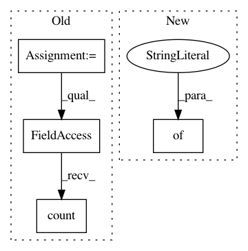

4f35c2fade7650944f863a3ba1d1b63d618d9c01,utils/munin/newsblur_feeds.py,,,#,6
Before Change
"exception_feeds": Feed.objects.filter(has_feed_exception=True).count(),
"exception_pages": Feed.objects.filter(has_page_exception=True).count(),
"inactive_feeds": Feed.objects.filter(active=False).count(),
"duplicate_feeds": DuplicateFeed.objects.count(),
"active_feeds": Feed.objects.filter(active_subscribers__gt=0).count(),
}
After Change
"subscriptions.label": "subscriptions",
}
metrics = {
"feeds": Feed.objects.count(),
"subscriptions": UserSubscription.objects.count(),
}
if __name__ == "__main__":
MuninGraph(graph_config, metrics).run()
In pattern: SUPERPATTERN
Frequency: 3
Non-data size: 4
Instances
Project Name: samuelclay/NewsBlur
Commit Name: 4f35c2fade7650944f863a3ba1d1b63d618d9c01
Time: 2010-12-23
Author: samuel@ofbrooklyn.com
File Name: utils/munin/newsblur_feeds.py
Class Name:
Method Name:
Project Name: okfn-brasil/serenata-de-amor
Commit Name: 312a8aca0bf10580a216ccf068840fbbb1cf0ac6
Time: 2016-10-03
Author: cuducos@gmail.com
File Name: jarbas/frontend/views.py
Class Name:
Method Name: home
Project Name: okfn-brasil/serenata-de-amor
Commit Name: cf227229002eb34c3d206c8d30f4a65983eb3d23
Time: 2016-10-05
Author: cuducos@gmail.com
File Name: jarbas/frontend/views.py
Class Name:
Method Name: home